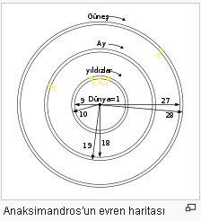

Anaksimandros
Anaksimandros (Yunanca: Ἀναξίμανδρος) Miletos'da Sokrates öncesi dönemde yaşamış İyonlu bir filozoftur. Thales'in öğrencisidir. Aynı zamanda tarihsel kaynaklara göre öğretilerini kaleme almış ilk filozoftur ve eseri Grek dilinde düzyazı olarak kaleme alınmış ilk kitaptır. Ancak yazdıklarından sadece bir cümle günümüze ulaşmıştır. Onun buluşlarıyla ilgili birincil kayıtlar sonraki yazarların bize aktardıklarıdır. (Söz konusu tek cümlede su ve ateş gibi sözlerin ortaya çıkışı, haksızlıkların cezalandırdığı insan toplumundan elde edilen mecazlarla betimlenir. Örneğin ne sıcak ne de soğuk süreklidir, ikisi de aralarındaki dengeyi korumak için ödün verirler.) O hem bir doğa filozofu hem de bir doğa araştırıcısıdır. Her iki alanda da çığır açmıştır. Bilime önderlik yapan ve evrene farklı gözle bakıp inceleyen ilk kişidir. Birçok kişi tarafından astronominin kurucusu sayılır ve ilk kez kozmoloji ya da dünya üzerinde sistematik felsefe görüşü geliştiren filozoftur. Felsefeye ‘arkhe’ terimini de ilk o getirmiştir.
Hayatı
Antikçağ tarihçisi Apollodor'a göre 42. Olimpiyatın 3. yılına denk gelen MÖ 610 da Miletos’da doğmuş ve 64 yaşındayken, 58. Olimpiyatın 2. yılına denk gelen 546 yılında da ölmüştür. Diogenes Laertus’dan edinilen bilgilere göre; Milesian Okulunun kurucusu olan Thales’in öğrencisiydi. Başarıları Anaksimenes ve Pythagoras’ı da etkilemiştir.
Teorileri
Apeiron, Sonsuzluk Miletos’lu diğer iki filozof gibi onun da temel sorunu, ilkenin (arkhe) özü sorunudur. Anaksimandros arkhe kavramıyla duyusal verili olanı aşarak hedefi belli olan bir yönde metafizik bir kavrama doğru ilk adımı atmaktadır. Arkhe olarak niçin ‘sonsuz’u (Apeiron) seçtiğini de bilmektedir. Çünkü sırf böyle bir kavram yaşam sürecinin sonsuza kadar devamını güven altına alabilir. Ona göre doğmak birmiş olmaktır, ölmek her şeyin ilkesine dönmektir ve dünyanın tanıdığı ya da tanıyacağı bütün varlıklar sonsuz sayıda olmuş ve olacaklardır. Apeiron tüm nesnelerin içinde nesne ile kaynaşmış bir şekilde bulunan ve mekansal olarak sınırsız yani tükenmez bir kaynaktır. Anaksimandros duyularımızla algılanamayacak kadar belirsiz olan Apeiron ile algılanan dünyanın dışında bir takım oluşların var olduğunu kabul eder. Anaksimandros'un Apeiron'u ile Platon'un idealarına giden yol açılmıştır. Anaksimandros sonsuz’u nitel yönden homojen ama hala belirsiz bir madde yığını olarak düşünüyordu. Sonsuz kavramıyla sonsuz (sınırsız) maddeyi kastettiği zaman, bununla sırf madde ile gücün henüz birbirinden ayrılmadığını anlatmak istiyordu. Bu Dünyada olup bitenler Anaksimandros'a göre asla sona ermeyen harekete dayanmaktadır. Bu hareket ilkenin özüne ait olduğuna göre, ilke de özü vasıtasıyla olup bitenleri kavranabilir duruma getirecektir. Önemli başka bir adımı da, ilkenin evrensel süreçteki etkisini tek tek tasarlama ve ancak ondan sonra kavranabilir duruma getirme denemsidir.
Evren bilimi
 Evren'in sırf gözleme ve rasyonel düşünmeye dayalı meydana geliş öyküsünü ilk kez tasarlayan dünyamızın bir 'evren' yani planlı bir şekilde düzenlenmiş bir bütün olduğunu ilk kez o ifade etmiştir. Anaksimandros’un mitolojiyi kullanmadan evreni açıklamaya çalışması onu bu konuda kendinden önce yazan yazarlardan (Hesiodos) ayırır. Tarihe en büyük katkısı evren hakkında ve hayat hakkında yazdıklarıdır. Bu yüzden ‘evren’in babası’ olarak adlandırılır. Aynı zamanda astronomiyi de o icat etmiştir. Bilinen dünyanın bir haritasını çizmiştir. Ussal çıkarımlara önem veren bir düşünür olduğundan simetriye ağırlık vermiştir. Sıcakla soğuğun önceden beri var olan doğuruşu nesnesi kozmosun meydana gelişinde ayrılmış ve bundan yeryüzü çevresindeki havayı bir ağacın kabuğu gibi saran bir alev kümesi meydana gelmiş, bu küre parçalanıp da bir takım daireler halinde toplandığı zaman güneş, ay ve yıldızlar onun yerini almışlar. Güneş'in çizdiği daire dünyanın 27 misli, ayınki de 19 misli imiş, en yukarıda güneş sonra ay en aşağıda yıldızlar çemberi bulunuyormuş. Onun kuramındaki yenilik yerin şu ya da bu biçimde göklerde bir yerlerde asılı olduğu ya da bir yerden destek aldığı biçimindeki eski kanıyı reddetmesidir. Ona göre yeryüzü şekil bakımından silindir biçiminde, ve yüksekliği genişliğinin üçte biri kadardır. İki düz yüzeyden biri üzerinde biz yürüyoruz, öteki bunun karşısında bulunuyor ve yer evrenin merkezinde desteksiz bir konumda durmaktadır; çünkü herhangi bir yönde hareket etmesi için bir neden yoktur, bundan dolayı da hareketsizdir.
Meteorolojik düşünceleri
 Bu ilk fizikçiyi öncelikle ilgilendiren konu meteora yani gökyüzündeki nesnelerdi. Meteora'yı ve depremi fizik yönünden ilk o açıklamıştır. Gök haritalarını çıkarırken geometriden ve matematiksel orandan yararlanmıştır. Gnomon’u (gök ölçüsü),ilk o bulmuş ve güneş saatinin yanına dikmiştir. Ayrıca ilk haritayı çizen bir 'sphaere' yani gökküresi planlayıp gerçekleştiren de yine o dur. Ama özellikle yeryüzünün boşlukta durduğunu keşfetmesi ve bunu matematiksel yönden açıklaması o gün için duyulmamış bir varsayımdır.Bu ilk fizikçiyi öncelikle ilgilendiren konu meteora yani gökyüzündeki nesnelerdi. Meteora'yı ve depremi fizik yönünden ilk o açıklamıştır. Gök haritalarını çıkarırken geometriden ve matematiksel orandan yararlanmıştır. Gnomon’u (gök ölçüsü),ilk o bulmuş ve güneş saatinin yanına dikmiştir. Ayrıca ilk haritayı çizen bir 'sphaere' yani gökküresi planlayıp gerçekleştiren de yine o dur. Ama özellikle yeryüzünün boşlukta durduğunu keşfetmesi ve bunu matematiksel yönden açıklaması o gün için duyulmamış bir varsayımdır.
Bu ilk fizikçiyi öncelikle ilgilendiren konu meteora yani gökyüzündeki nesnelerdi. Meteora'yı ve depremi fizik yönünden ilk o açıklamıştır. Gök haritalarını çıkarırken geometriden ve matematiksel orandan yararlanmıştır. Gnomon’u (gök ölçüsü),ilk o bulmuş ve güneş saatinin yanına dikmiştir. Ayrıca ilk haritayı çizen bir 'sphaere' yani gökküresi planlayıp gerçekleştiren de yine o dur. Ama özellikle yeryüzünün boşlukta durduğunu keşfetmesi ve bunu matematiksel yönden açıklaması o gün için duyulmamış bir varsayımdır.Bu ilk fizikçiyi öncelikle ilgilendiren konu meteora yani gökyüzündeki nesnelerdi. Meteora'yı ve depremi fizik yönünden ilk o açıklamıştır. Gök haritalarını çıkarırken geometriden ve matematiksel orandan yararlanmıştır. Gnomon’u (gök ölçüsü),ilk o bulmuş ve güneş saatinin yanına dikmiştir. Ayrıca ilk haritayı çizen bir 'sphaere' yani gökküresi planlayıp gerçekleştiren de yine o dur. Ama özellikle yeryüzünün boşlukta durduğunu keşfetmesi ve bunu matematiksel yönden açıklaması o gün için duyulmamış bir varsayımdır.
Kaynakça
- Tam adı: Anaksimandros veya Anaksimander
- Doğumu: MÖ 610 Milet, Karya
- Ölümü: MÖ 546
- Çağı: Sokrates öncesi felsefe
- Bölgesi Batı: felsefesi
- Okulu: İon felsefesi, Milet Okulu, doğalcılık
- İlgi alanları: Metafizik, astronomi, geometri, coğrafya